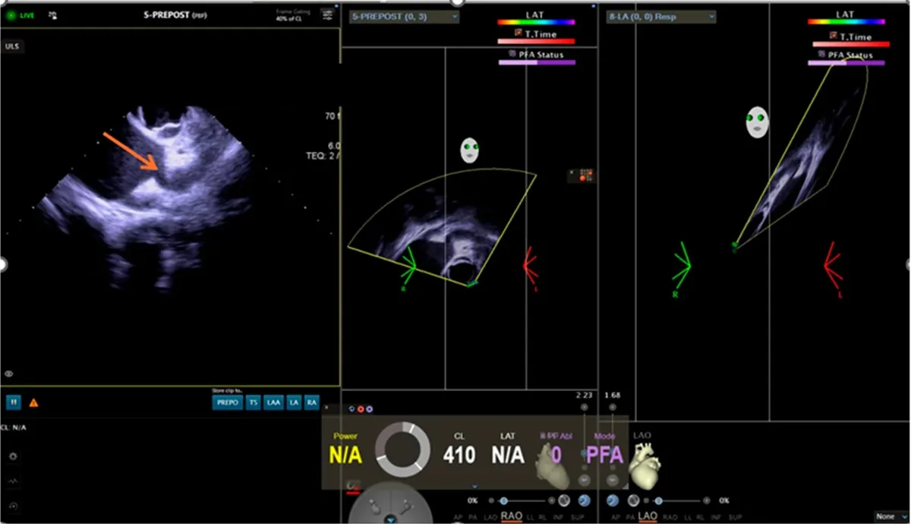
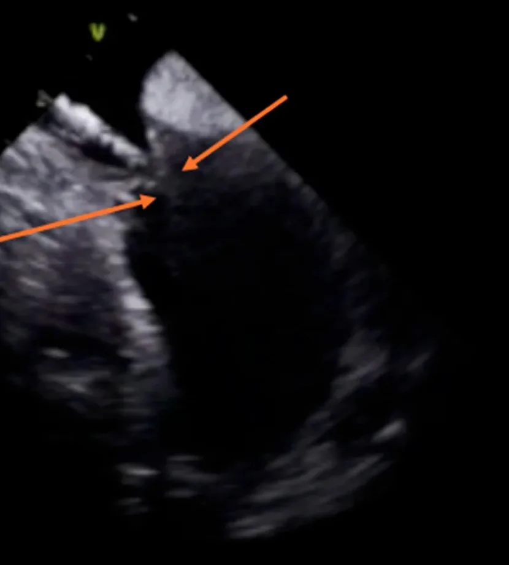

Atualizado em 4 de novembro de 2026
Ecocardiografia intracardíaca (ICE): o ultrassom que guia a ablação por dentro do coração
A ecocardiografia intracardíaca, conhecida pela sigla em inglês ICE, é um ultrassom feito de dentro do coração. Um cateter fino com um pequeno transdutor na ponta entra por uma veia da virilha, junto com os cateteres da ablação, e fica posicionado no lado direito do coração. Dali, ele mostra em tempo real as paredes, as válvulas, as veias e o próprio cateter de ablação trabalhando.
Na prática, o ICE dá ao eletrofisiologista uma visão direta da anatomia de cada paciente durante todo o procedimento. Ele é usado principalmente na ablação de fibrilação atrial, mas também em outras arritmias.
Por que ver o coração por dentro faz diferença?
Durante décadas, a ablação foi guiada principalmente pelo raio X (fluoroscopia). O raio X mostra bem os cateteres, mas mostra mal o coração: as paredes e as estruturas aparecem como sombras. O ICE completa essa informação em pelo menos quatro momentos:
- Punção transeptal. Para chegar ao átrio esquerdo, onde fica a origem da fibrilação atrial, o cateter precisa atravessar a parede fina entre os dois átrios. Com o ICE, essa passagem é feita vendo o ponto exato da punção.
- Contato e posição do cateter. O ICE mostra se o cateter está encostado no tecido certo e se a energia está sendo aplicada onde deveria.
- Detecção precoce de complicações. Um acúmulo de líquido em volta do coração (derrame pericárdico) ou a formação de um coágulo podem ser vistos no momento em que começam, antes de causar sintomas.
- Busca de trombo no átrio. Antes de ablações no átrio esquerdo, é preciso afastar a presença de um coágulo dentro do coração. Em muitos serviços, isso é feito com o ecocardiograma transesofágico, um exame em que uma sonda passa pela garganta até o esôfago. O próprio ICE pode fazer essa avaliação durante o procedimento [1, 2]. É assim que o Dr. Thiago trabalha: ele não usa o transesofágico, o que evita a passagem da sonda pelo esôfago e deixa o procedimento mais rápido.


O que os estudos mostram sobre segurança?
Os dados mais amplos vêm de grandes bancos de dados de pacientes tratados fora de estudos controlados:
- Numa análise de cerca de 299 mil ablações de fibrilação atrial nos Estados Unidos, entre 2001 e 2014, o uso do ICE se associou a menos complicações (risco 52% menor) e a menor mortalidade hospitalar (0,11% contra 0,54%). A internação também foi mais curta (2,1 contra 4 dias) [3].
- Num banco de dados de 2015 a 2020, comparando pacientes semelhantes, as complicações foram de 2,9% com ICE e de 5,8% sem ICE. A necessidade de nova ablação em 12 meses também foi menor no grupo com ICE [4].
- Num estudo com 2.003 pacientes, o ICE substituiu o transesofágico na busca de trombo antes da ablação sem aumento de complicações. Nenhum evento embólico foi causado por trombo não detectado [2].
Uma ressalva honesta: os dois primeiros estudos são observacionais. Eles mostram associação, não provam que o ICE sozinho causou a diferença. Centros que usam ICE podem ter outras características que também influenciam o resultado. Ainda assim, a direção dos dados é consistente, e o ICE se tornou parte da rotina de muitos centros de eletrofisiologia.
É possível fazer a ablação sem raio X?
Sim, em boa parte dos casos. A combinação do mapeamento eletroanatômico 3D, que mostra a posição dos cateteres num modelo do coração no computador, com o ICE, que mostra a anatomia real em tempo real, permite fazer a ablação com pouco ou nenhum raio X. Essa abordagem é chamada de zero fluoroscopia.
O que dizem os estudos:
- Num estudo randomizado com 80 pacientes com fibrilação atrial paroxística, a ablação guiada só por ICE e mapeamento 3D foi feita sem raio X em todos os pacientes, com exceção de um, que precisou de 8 segundos. Não houve diferença no tempo de procedimento nem no resultado em 12 meses [5].
- Numa meta-análise de 7 estudos com 1.593 pacientes, a abordagem sem raio X foi possível em 95,1% dos casos, com taxa de sucesso e de complicações semelhantes à abordagem convencional [6].
- Outra meta-análise, com 15 estudos e 2.228 pacientes, chegou à mesma conclusão: eficácia e segurança semelhantes, com menos tempo de raio X [7].
Por que reduzir o raio X importa? A dose de radiação de uma ablação é baixa para um paciente isolado, mas ela se soma ao longo da vida, principalmente em quem é jovem ou vai precisar de mais de um procedimento. Para a equipe, que trabalha com radiação todos os dias, a redução também importa. Por isso, a regra em radiologia é usar a menor dose possível.
Um limite real: a zero fluoroscopia depende da anatomia, do tipo de arritmia e do procedimento. Em alguns casos, um pouco de raio X ainda é a forma mais segura de concluir uma etapa. O objetivo é usar o mínimo necessário, e não evitar o raio X a qualquer custo.
Na prática do Dr. Thiago, a técnica de zero fluoroscopia é usada em todos os pacientes. O raio X fica reservado para quando é realmente necessário.
E na gestação?
A gravidez aumenta a frequência de algumas arritmias, e parte dos remédios antiarrítmicos tem restrições nesse período. Na maioria das vezes, o tratamento é feito com remédios e a ablação fica para depois do parto.
Quando a arritmia não é controlada com remédios ou é mal tolerada, a ablação pode ser considerada. Nesse cenário, a zero fluoroscopia evita expor o bebê à radiação.
Os dados em gestantes vêm de séries pequenas, porque a situação é pouco frequente. Num registro multicêntrico, 18 gestantes passaram por ablação sem raio X, todas sem complicações graves para a mãe ou para o bebê. Depois de 5 anos de acompanhamento, não foram observados efeitos nas crianças [8]. A decisão é sempre individual e envolve o obstetra.
O Dr. Thiago já realizou ablação sem raio X em gestante, quando indicada.
O ICE tem desvantagens?
- Mais um cateter. O ICE entra por uma punção na veia da virilha, o que traz um pequeno risco adicional no local, semelhante ao dos outros cateteres.
- Não substitui a avaliação antes do procedimento. Exames como o ecocardiograma e, em alguns casos, a tomografia ou a ressonância continuam tendo seu papel.
Perguntas frequentes
- O ICE é um exame separado?
- Não. Ele é feito durante a ablação, pelo mesmo acesso na virilha, e não exige outra internação.
- Com o ICE, ainda preciso do ecocardiograma transesofágico?
- Na rotina do Dr. Thiago, não. A busca de trombo é feita com o próprio ICE, durante o procedimento [1, 2].
- Toda ablação pode ser feita sem raio X?
- O Dr. Thiago usa a técnica de zero fluoroscopia em todos os pacientes. Em alguns casos, a anatomia ou o procedimento exigem um pouco de raio X, e ele é usado só quando é realmente necessário.
- Gestantes podem fazer ablação?
- Quando a arritmia não é controlada com remédios ou é mal tolerada, a ablação sem raio X pode ser considerada, em decisão conjunta com o obstetra [8].
Agendamento
Agende uma avaliação com o Dr. Thiago
Na consulta, ele avalia o seu caso e explica as opções de tratamento. O agendamento é feito com a secretaria, pelo WhatsApp do local que preferir.
Leia também: Ablação de fibrilação atrial · Ablação por campo pulsado
Referências
- Baran J, Stec S, Pilichowska-Paszkiet E, et al. Intracardiac echocardiography for detection of thrombus in the left atrial appendage: comparison with transesophageal echocardiography (Action-ICE I). Circ Arrhythm Electrophysiol. 2013. doi:10.1161/CIRCEP.113.000504
- Wang Y, Zhao Y, Zhou K, et al. Intracardiac echocardiography is a safe and effective alternative to transesophageal echocardiography for left atrial appendage thrombus evaluation at the time of atrial fibrillation ablation: the ICE-TEE study. Pacing Clin Electrophysiol. 2023. doi:10.1111/pace.14601
- Isath A, Padmanabhan D, Haider SW, et al. Does the use of intracardiac echocardiography during atrial fibrillation catheter ablation improve outcomes and cost? A nationwide 14-year analysis from 2001 to 2014. J Interv Card Electrophysiol. 2021. doi:10.1007/s10840-020-00844-5
- Pimentel RC, Rahai N, Maccioni S, Khanna R. Differences in outcomes among patients with atrial fibrillation undergoing catheter ablation with versus without intracardiac echocardiography. J Cardiovasc Electrophysiol. 2022. doi:10.1111/jce.15599
- Bulava A, Hanis J, Eisenberger M. Catheter ablation of atrial fibrillation using zero-fluoroscopy technique: a randomized trial. Pacing Clin Electrophysiol. 2015. doi:10.1111/pace.12634
- Debreceni D, Janosi K, Bocz B, et al. Zero fluoroscopy catheter ablation for atrial fibrillation: a systematic review and meta-analysis. Front Cardiovasc Med. 2023. doi:10.3389/fcvm.2023.1178783
- Huang HD, Abid QU, Ravi V, et al. Meta-analysis of pulmonary vein isolation ablation for atrial fibrillation: conventional vs low- and zero-fluoroscopy approaches. J Cardiovasc Electrophysiol. 2020. doi:10.1111/jce.14450
- Stec S, Bronisz M, Kornaszewska J, et al. Zero-fluoroscopy catheter ablation for arrhythmias in pregnancy: validation of a standardized approach with 5-year follow-up. Front Cardiovasc Med. 2026. doi:10.3389/fcvm.2026.1859227